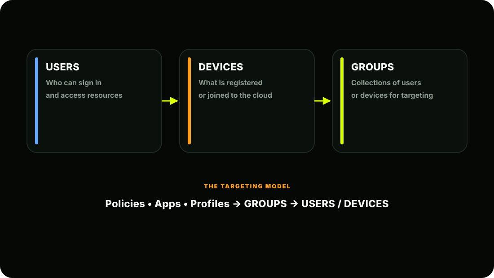
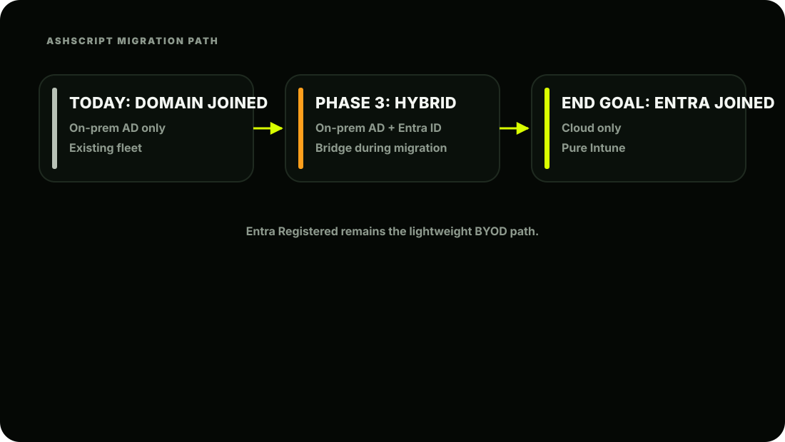
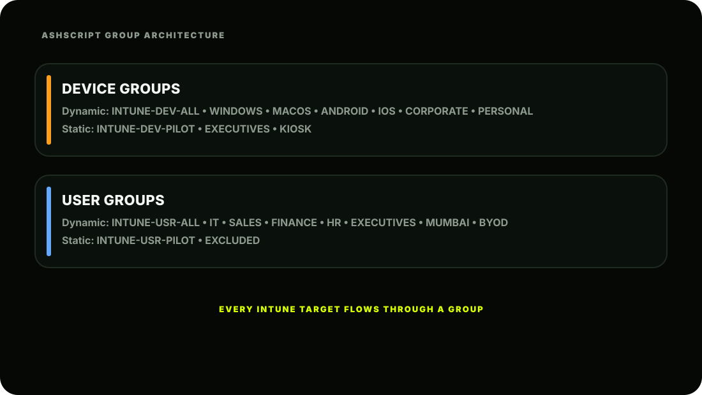

The Scene
It's Monday morning. The AshScript tenant is live. Ashpak sits down with his coffee and
opens the Intune portal, ready to start enrolling devices.
Then it hits him.
He opens Devices → All Devices and sees:
No devices enrolled yet.
He opens Users and sees:
No users found.
Of course. The tenant is empty. All 1,000 AshScript employees exist only in the on-premises Active Directory. The cloud doesn't know they exist yet. Priya walks over:
"You can't manage devices without identities, Ashpak. And you can't target policies without groups. Before a single device gets enrolled, you need to sort out identity. That means Entra ID first."
She's right. Identity is the bedrock. Let's build it.
What is Entra ID: Really?
You already know Entra ID is the identity engine. But let's go deeper so you truly understand what you're working with. Entra ID is Microsoft's cloud-based identity and access management service. Think of it as the cloud version of your on-premises Active Directory; but far more powerful, because it's: Cloud-native; accessible from anywhere, any device
Internet-aware; understands modern authentication protocols (OAuth, SAML, OpenID Connect) Security-intelligent; can detect risky sign-ins, compromised credentials, impossible travel Application-integrated; connects to thousands of apps beyond just Microsoft products
Entra ID vs On-Premises Active Directory
This comparison is essential for AshScript's migration. Ashpak needs to understand what changes and what stays the same: The critical insight for AshScript: On-prem AD and Entra ID are not replacements for each other at this stage; they work side by side during the migration. On-prem AD remains the source of truth for users, and Entra Connect syncs those users up to the cloud. We'll set this up in Lesson 2.2.
| Concept | On-Prem Active Directory | Entra ID (Cloud) |
|---|---|---|
| Purpose | Manage users + computers on local network | Manage identities + access in the cloud |
| Authentication protocol | Kerberos / NTLM | OAuth 2.0 / SAML / OpenID Connect |
| Device join type | Domain Join | Entra Join or Hybrid Entra Join |
| Group Policy | GPOs pushed via domain | Configuration Profiles via Intune |
| Connectivity needed | Must be on-network or VPN | Works from anywhere, internet only |
| Managed by | Your own servers | Microsoft's cloud infrastructure |
| User sync | N/A; source of truth | Synced from on-prem via Entra Connect |
| MFA built-in | ×Needs extra tooling | Native |
| Conditional Access | ×Not available | Native |
The Three Building Blocks of Entra ID
Let's explore each one deeply.

Building Block 1: Users
A user in Entra ID represents a person who can sign in and access company resources.
Two Types of Users in Entra ID:
What a User Object Contains: When Ashpak looks at a user in Entra ID, here's what he sees:
The UPN (User Principal Name) is the most important identifier. It's what the user types to sign in and what Intune uses to associate a device with its owner. For AshScript, UPNs follow the format firstname@ashscript.com .
Building Block 2: Devices
Three Device Join States; Critical to Understand:
| Join type | What it means | AshScript use case |
|---|---|---|
| Entra Registered | Cloud only. BYOD personal device. Lightweight; just registers the device. User keeps control. | Personal phones for MAM. |
| Entra Joined | Cloud only. Fully managed by Intune. No on-prem domain. Best for new cloud-first devices. | Brand new company laptops; clean cloud-native deployment. |
| Hybrid Entra Joined | BOTH on-prem AD AND Entra ID. The device is domain-joined AND cloud-registered. The bridge state during migration. | AshScript's existing 1,000 domain-joined laptops during migration. |

A device object in Entra ID represents a physical machine that has been registered or joined to the tenant.
Three Device Join States; Critical to Understand: This is one of the most confusing topics for beginners. Let's make it crystal clear: AshScript's migration path:
Building Block 3: Groups
Groups are the most powerful concept in Intune. Everything; every policy, every app, every configuration profile; gets assigned to a group. If you get groups wrong, nothing works right. If you get groups right, everything flows beautifully.
Two Types of Groups:
Type 1: Static Groups (Assigned Groups)
You manually add and remove members. Simple but high-maintenance.
When to use static groups: Small, stable groups that rarely change Pilot groups for testing new policies Groups of specific named devices (e.g., "Executive Laptops")
Type 2: Dynamic Groups
Membership is automatically managed by Entra ID based on rules you define. This is where the real power is.
- This is why Entra ID P1 matters. Dynamic groups require Entra ID P1 minimum. Without it,
- you're stuck with static groups; manageable for 10 devices, a nightmare for 1,000.
Pro tip: Always create a Pilot Group first. Every new policy at AshScript gets tested on 20 pilot users before rolling out to everyone. This has saved Ashpak from breaking 1,000 devices on multiple occasions.

Key Concepts to Lock In
| Concept | Remember This |
|---|---|
| Entra ID | Cloud identity system; users, devices, groups |
| UPN | User's sign-in name; user@domain.com |
| Member vs Guest | Employees vs external collaborators |
| Entra Registered | BYOD; lightweight, user retains control |
| Entra Joined | Cloud-only company device; full Intune management |
| Hybrid Entra Joined | Migration state; on-prem + cloud together |
| Static Groups | Manual membership; use for pilots and exceptions |
| Dynamic Groups | Auto-membership by rules; use for everything else |
| Dynamic Groups need | Entra ID P1 minimum |
| Group processing time | 5-15 min typically, up to 24hrs max |